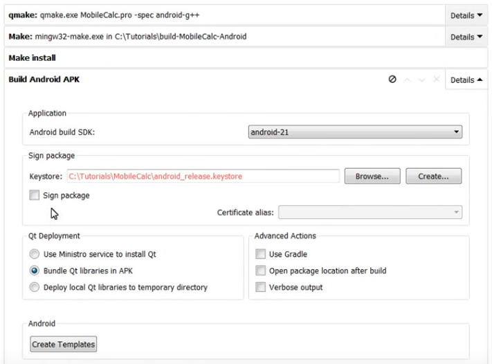

Данный текст составлен на основе видео Qt - Публикация приложения на Google Play за авторством Льва Алексеевского. В нем все подробно рассказано. Здесь перечислены шаги, которые надо сделать. Информация актуальна, как минимум, для версий Qt 5.9.x - 5.10.x.
Надо переключиться на тип сборки проекта Android for armeabi-v7a. Развернуть раздел Build Android APK.

Если еще не создан щаблон Android-приложения, его нужно создать путем нажати я кнопки Create Templates. Появится подкаталог проекта с именем android, в котором будут лежать различные файлы, необходимые для сборки, и файл AndroidManifest.xml.
На видео показана работа в Qt 5.7.1 и неизвестной версией QtCreator. В этом QtCreator есть раздел настроек Permission, где можно выбирать разрешения для приложения. В более свежих версиях такой настройки нет. Возможно, что теперь информация о разрешениях настраивается автоматически на основании используемых модулей Qt. Но это нужно проверять отдельно.
Перед подписыванием приложения можно еще сконфигурировать сплеш-экран, появляющийся при старте приложения. Для этого в AndroidManifest.xml надо раскомментировать строки, обрамленные комментарием Splash screen, и настроить пути к картинкам: